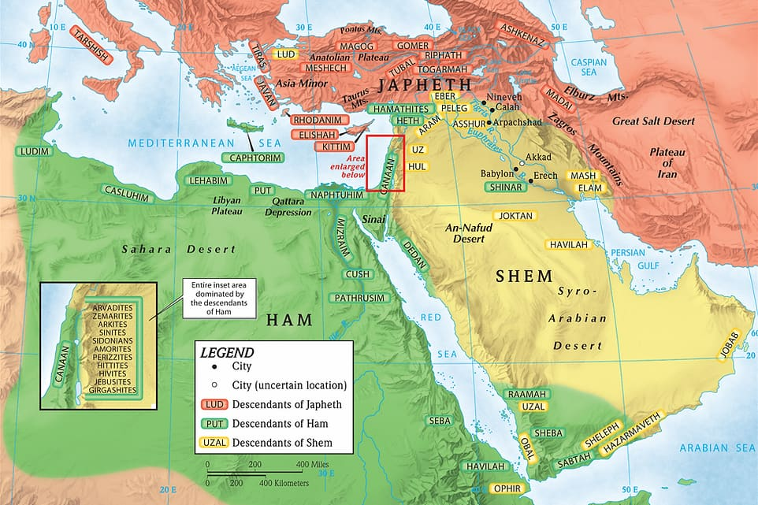

Sessão 25: Abençoando e Amaldiçoando os Filhos de NoéSession 25: Blessing and Cursing Noah's Sons
Principais AprendizadosKey Takeaways
- As genealogias de Gênesis 10 são uma forma de etnogeografia simbólica. Autores posteriores usarão o elenco estabelecido de personagens e lugares para enfatizar e subverter papéis esperados.The genealogies of Genesis 10 are a form of symbolic ethnogeography. Later authors will use the established cast of characters and places to emphasize and subvert expected roles.
- Outros povos habitando nas tendas de Sem é uma imagem esperançosa de Deus trazendo bênção e reconciliação a todas as nações através da linhagem de Sem.Other people dwelling in the tents of Shem is a hopeful picture of God bringing blessing and reconciliation to all nations through the line of Shem.
A Bênção e Maldição de Noé Sobre Seus FilhosThe Blessing and Curse of Noah Upon His Sons
Como Caim, que também prejudicou um membro da família, Ham alinhou-se com a serpente através de uma reencenação da tola rebelião de Adão e Eva. E assim a prole de Ham, Canaã, baseada na interpretação do incesto maternal, é trazida sob a maldição como Caim. Assim como a serpente se sujeitou à humilhação no pó porque a semente da mulher a esmagará (Gn 3:15), assim aqui a semente de Ham será humilhada e se tornará escrava de seus irmãos. Um relance adiante a Gênesis 10:15-18 nos mostra que a semente de Canaã produzirá um grande número de tribos hostis aos israelitas enquanto entram na terra de Canaã.Like Cain who also wronged a family member, Ham has aligned himself with the serpent through a replay of Adam and Eve's foolish rebellion. And so Ham's offspring Canaan, based on the maternal incest interpretation, is brought under the curse like Cain. Just as the snake became subject to humiliation in the dust because the seed of the woman will crush him (Gen. 3:15), so here the seed of Ham will be humiliated and become a slave to his brothers. A glance forward to Genesis 10:15-18 shows us that the seed of Canaan will produce a large number of tribes who are hostile to the Israelites as they enter the land of Canaan.
| Pessoa | Onde Mais Aparecem |
|---|---|
| 1. Canaã/Canaaneu: Um termo geográfico para se referir a todas as várias tribos que eram indígenas à terra de Canaã (fronteiras descritas em Gn 10:19). | • Neutro aos israelitas: Gn 12:6, 13:7, 50:11 • Hostil aos israelitas: Gn 34:30; Ex 15:15; Nm 13:29, 14:43-45, 21:1; Js 5:1, 7:9, 9:1; Jz 1:1-17, 27-33; 3:3; 4:2, 23-24 • Um "perigo" religioso/cultural aos israelitas: Gn 24:3, 37; Ex 23:23, 28; 33:2; 34:11; Js 14:1, 16:10 |
| 2. Sidom, seu primogênito — Sidom/Sidonians: A região-cidade costeira ao norte de Canaã (Líbano moderno) | • Amigável: 1 Rs 5:6, 17:9; Ed 3:7 • Hostil: Js 11:8, 13:6; Jz 3:3, 10:12 • Perigo religioso: Jz 10:6; 1 Rs 11:1, 5; 16:31; 2 Rs 23:13 • Escravizada à Assíria e Babilônia: Is 23:12; Jr 25:22, 27:3, 47:4; Ez 27:8, 28:21-22 |
| 3. e Hete — Hete/Hititas: A região/tribo que habitou a Ásia-Menor (Turquia moderna) e migrou SE para habitar Canaã | • Amigável: Gn 23, 49:29-30, 50:13; 1 Sm 26:6; 2 Sm 11; 1 Rs 10:29 • Hostil: Ex 23:28, 34:11; Dt 7:1, 20:17; Js 3:10, 9:1, 24:11 • Perigo religioso: Gn 26:34, 27:46, 36:2; 1 Rs 11:1 • Escravizada a Israel: 1 Rs 9:20 |
| 4. e o Jebuseu — Jebus/Jebuseus: A tribo que habitou a antiga Jerusalém, chamada Jebus quando era uma cidade cananeia | • Amigável: 2 Sm 24:16, 18 • Hostil: Ex 23:23, 34:11; Nm 13:29; Dt 7:1, 20:17; Js 9:1, 11:3, 15:63; Jz 1:21; 2 Sm 5:6-8 • Escravizada a Israel: 1 Rs 9:20 |
| 5. e o Amorreu — Um povo que habitou a região do alto Eufrates; falavam uma língua semítica (acadiano em Mari); muitos migraram para Canaã no período de Abraão | • Amigável/neutral: Gn 14:13; 1 Sm 7:14; 2 Sm 21:2 • Hostil: Gn 48:22; Ex 23:23, 33:2, 34:11; Nm 13:29, 21:21-32 (Siom), 32:39; Dt 1:4, 27; 2:24; 3:8; 7:1; 20:17; Js 5:1, 9:1, 10:5-6, 24:11-12; Jz 1:34-35 • Perigo religioso: Gn 15:16, 21; Js 24:15, 18; Jz 6:10; 1 Rs 21:26; 2 Rs 21:11 • Associado aos gigantes Nephalim Siom e Ogue: Nm 21; Dt 1:4, 27; Am 2:9-10 • Associado à Jerusalém cananeia: Ez 16:3, 45 |
| 6. e o Girgaseu — Uma tribo na terra de Canaã | • Mencionada apenas em uma lista de povos cananeus: Gn 15:21; Dt 7:1; Js 3:10, 24:1 |
| 7. e o Hivita — Uma tribo na terra de Canaã | • Amigável: Hivitas = Gibeonitas em Js 9:7, 11:19 • Hostil: Gn 34:2 (Siquém e Hamor); Js 9:1, 11:3, 24:11; Jz 3:3 • Perigo religioso: Gn 36:2; Jz 3:3 • Hostil: Ex 23:23, 33:2, 34:11; Dt 7:1, 20:17 • Escravizada a Israel: 1 Rs 9:20 |
| 8. e o Arquita — Uma tribo cananeia; mencionada apenas nesta genealogia e 1 Cr 1:15 | |
| 9. e o Sinita — Uma tribo cananeia; mencionada apenas aqui e 1 Cr 1:15 | |
| 10. e o Arvadita — Arvade: Uma cidade-ilha fenícia do norte (parceira de Sidom em Ez 27:8, 11); uma tribo cananeia; mencionada apenas aqui e 1 Cr 1:15 | |
| 11. e o Zemarita — Uma cidade no alto/Eufrates (mencionada em Ez 27:8); mencionada apenas aqui e 1 Cr 1:16 | |
| 12. e o Hamatita — Uma cidade arameia no rio Orontes ao norte de Canaã | • Amigável: 2 Sm 8:9 • Hostil: 2 Rs 14:25-28 • Escravizada à Assíria e Babilônia: 2 Rs 17:24, 30; Jr 39:5, 49:23 |
| e depois as famílias dos cananeus foram espalhadas. | |
As Famílias de Canaã. Criado por Tim Mackie para BibleProject Classroom: Noé a Abraão (2020).The Families of Canaan. Created by Tim Mackie for BibleProject Classroom: Noah to Abraham (2020).
Em particular, o status de escravo dos cananeus a seus irmãos antecipa a sujeição destas tribos pelos israelitas (ver Dt 7:1-2; Js 11-12; Jz 1). Contudo, assim como Caim não estava destinado a ser a semente da mulher ou da serpente por linhagem, assim também a escolha de Ham não sela o destino de seus descendentes. Antes, será sua própria reencenação do comportamento sexual ilícito de Ham que os faz vomitar para fora da terra (ver Lv 18:24-28).In particular, the slave status of the Canaanites to their brothers anticipates the subjugation of these tribes by the Israelites (see Deut. 7:1-2; Josh. 11-12; Judg. 1). However, just as Cain was not destined to be the seed of the woman or the snake by lineage, so also Ham's choice does not seal the fate of his descendants. Rather, it will be their own replay of Ham's illicit sexual behavior that gets them vomited out of the land (see Lev. 18:24-28).
"[O]s cananeus são notórios por todo o Antigo Testamento por suas práticas sexuais aberrantes, e Levítico 18:3 liga tanto o Egito quanto Canaã como povos cujos hábitos são abomináveis: 'Não fareis como eles fazem na terra do Egito ... e ... como fazem na terra de Canaã.' A indiscrição de Ham para com seu pai facilmente pode ser vista como um tipo do comportamento posterior dos egípcios e cananeus. A maldição de Noé sobre Canaã assim representa a sentença de Deus sobre os pecados dos cananeus, os quais seu antepassado Ham havia exemplificado." Wenham, Gordon J. (1987). Word Biblical Commentary, Vol. 1: Genesis 1-15. Thomas Nelson. 201."[T]he Canaanites are notorious throughout the Old Testament for their aberrant sexual practices, and Levitcus 18:3 links both Egypt and Canaan as peoples whose habits are abominable: 'You shall not do as they do in the land of Egypt ... and ... as they do in the land of Canaan.' Ham's indiscretion towards his father may easily be seen as a type of the later behavior of the Egyptians and Canaanites. Noah's curse on Canaan thus represents God's sentence on the sins of the Canaanites, which their forefather Ham had exemplified." Wenham, Gordon J. (1987). Word Biblical Commentary, Vol. 1: Genesis 1-15. Thomas Nelson. 201.
Contudo, nem todos os hamitas ou cananeus repetirão os pecados de seus antepassados; muitos se voltarão e darão sua lealdade a Yahweh, como Tamar, Raabe, e os heveus-gibeonitas. E alguns aparentemente nunca abandonaram a adoração de Yahweh, como Melquisedeque em Gênesis 14.However, not all Hamites or Canaanites will repeat the sins of their ancestors; many will turn and give their allegiance to Yahweh, like Tamar, Rahab, and the Hivite-Gibeonites. And some apparently never gave up the worship of Yaweh, like Melchizedek in Genesis 14.
Isto é uma maldição declarativa ou um pedido do justo diante de Deus? "Está Noé orando e desejando que Canaã seja amaldiçoado, ou Canaã é amaldiçoado porque Noé pronunciou o anátema? Será que ... [ele] quer dizer 'Maldito seja Canaã' ou 'Maldito é Canaã'? Ora, não há dúvida de que 'maldito,' quando falado por Deus, é declarativo ... (Gn 3:14, 17-19; 4:11). Mas será que 'maldito' tem uma nuance na boca divina e outra na boca humana? Aqui o impulso optativo [= petição a Deus] parece preferível, pois 'maldito,' um particípio passivo, é seguido por quatro pedidos jussivos ('que ele seja ...,' vv. 26-27; 'que ele engrandeça,' v. 27, e provavelmente 'que ele habite,' v. 27). Que Noé apela a Deus no v. 27 também eleva as palavras de Noé da área de magia potente para o reino do pedido." Hamilton, Victor P. (1990). The Book of Genesis, Chapters 1-17. Eerdmans. 324.Is this a declarative curse or a request of the righteous before God? "Is Noah praying and wishing that Canaan will be cursed, or is Canaan cursed because Noah has pronounced the anathema? Does ... [he] mean 'Cursed be Canaan' or 'Cursed is Canaan'? Now, there is no doubt that 'cursed,' when spoken by God, is declarative ... (Gen. 3:14, 17-19; 4:11). But does 'cursed' have one nuance in the divine mouth and another nuance in the human mouth? Here the optative thrust [= petition to God] seems preferable, for 'cursed,' a passive participle, is followed by four jussive requests ('may he be ...,' vv. 26-27; 'may he enlarge,' v. 27, and probably 'may he dwell,' v. 27). That Noah appeals to God in v. 27 also lifts the words of Noah out of the area of potent magic and into the realm of request." Hamilton, Victor P. (1990). The Book of Genesis, Chapters 1-17. Eerdmans. 324.
Uma Bênção para Yahweh de SemA Blessing for Yahweh of Shem
Curiosamente, em contraste com a maldição de Canaã, Sem não é abençoado ele mesmo. Antes, Yahweh é abençoado e identificado como a divindade de Sem. O nome de aliança de Yahweh é confiado a Sem somente entre os irmãos; isto é uma sutil pista de que será a linhagem de Sem que levará adiante a semente da mulher (Gn 3:15, 4:26). "Esta é então a primeira intimação de que a linha da bênção de eleição de Deus está passando por Sem (cf. 4:26). A frase 'o Senhor, o Deus de Sem,' de fato antecipa muitas expressões similares em textos posteriores, e.g., 'o Senhor, o Deus de Abraão' [vossos pais, Israel, etc.] (24:27; Ex 3:15, 32:27, 34:23)." Wenham, Gordon J. (1987). Word Biblical Commentary, Vol. 1: Genesis 1-15. Thomas Nelson. 202. A sujeição de Canaã a Sem aponta adiante para o cumprimento narrativo no período de Josué (mais ou menos). Embora os israelitas farão de alguns descendentes de Ham seus escravos (os cananeus), haverá muitos filhos de Ham que de fato farão escravos dos filhos de Sem e Ham: Egito, Assíria, e mais notavelmente, Babilônia.Interestingly, in contrast to Canaan's curse, Shem is not blessed himself. Rather, Yahweh is blessed and identified as the deity of Shem. Yahweh's covenant name is entrusted to Shem alone among the brothers; this is a subtle hint that it will be Shem's lineage that carries forward the seed of the woman (Gen. 3:15, 4:26). "This is then the first intimation that the line of God's election blessing is going through Shem (cf. 4:26). The phrase 'the Lord, the God of Shem,' indeed anticipates many similar expressions in later texts, e.g., 'the Lord, the God of Abraham' [your fathers, Israel, etc.] (24:27; Exod 3:15, 32:27, 34:23)." Wenham, Gordon J. (1987). Word Biblical Commentary, Vol. 1: Genesis 1-15. Thomas Nelson. 202. Canaan's subjugation to Shem points forward to the narrative fulfillment in the period of Joshua (kind of). While the Israelites will make some descendants of Ham their slaves (the Canaanites), there will be many sons of Ham who in fact make slaves out of the sons of Shem and Ham: Egypt, Assyria, and most notably, Babylon.
Um Futuro para Jafé ... e Sem ... e CanaãA Future for Japheth ... and Shem ... and Canaan
As palavras de Noé para Jafé (יפת) brincam com seu nome em hebraico, Yephet (יפת). O nome vem da raiz patah = "tornar grande." Noé antecipa que o território de Jafé será expandido no futuro. O engrandecimento de Jafé convida o leitor a estudar a lista dos descendentes de Jafé em Gênesis 10:2-5.Noah's words for Japheth (יפת) play on his name in Hebrew, Yephet (יפת). The name comes from the root patah = "to make large." Noah anticipates that Japheth's territory will be expanded in the future. The enlarging of Japheth invites the reader to study the list of Japheth's descendants in Genesis 10:2-5.
Aqui encontramos tribos e nações que compõem em sua maioria a antiga Anatólia (Ásia Menor romana, Turquia moderna) e Grécia. Noé antecipa que estas tribos e nações engrandecerão seu território e farão seu caminho para o território de Sem. "Que ele habite nas tendas de Sem" poderia ser interpretado de duas maneiras diferentes.Here we find tribes and nations that mostly make up ancient Anatolia (Roman Asia Minor, modern Turkey) and Greece. Noah anticipates that these tribes and nations will enlarge their territory and make their way into the territory of Shem. "May he dwell in the tents of Shem" could be interpreted in two different ways.
"Para desapossar, para deserdar" — Há alguns contextos onde um grupo "habitar na tenda" de outro é o resultado de conflito e desapossamento. Salmo 78:55 NASB — [Yahweh] também expulsou as nações de diante deles, e as repartiu para herança por medida, e fez as tribos de Israel habitar em suas tendas. 1 Crônicas 5:10 NASB* — Nos dias de Saul fizeram guerra com os hagarenos, que caíram por sua mão, de modo que habitaram em suas tendas por toda a terra a leste de Gileade. *Palavras-chave adaptadas pelo professor. Nesta leitura, as palavras de Noé antecipam um conflito futuro entre todos os seus filhos onde Jafé desapossa Sem de sua tenda e faz de Canaã seu escravo. Muitos textos por todo o Antigo Testamento ativam este significado. Por exemplo, este significado é possível quando as nações em guerra com Israel são de Jafé, ou quando um conflito futuro é antecipado entre Israel e as nações. Em Gênesis 14, cinco reis do leste (dois de Ham e dois de Jafé) vêm escravizar quatro reis rebeldes de Canaã. No conflito, Ló, um descendente de Sem, é levado cativo. Abrão, um filho de Sem, e dois aliados cananeus derrotam os cinco reis e restauram os cativos. O sacerdote pagão Melquisedeque também aparece nesta narrativa, e ele adora o Deus criador e abençoa Abrão. O profeta pagão Balaão fala sobre o conflito futuro entre os filhos de Noé (Nm 24:23-24). Ele fala de um descendente de Jafé, os Quitim, que virá oprimir Assur (de Ham e Sem) e Eber (de Sem). Este conflito é expandido e desenvolvido em Daniel 7-12 na sequência de impérios levando à besta final e ao chifre que desapossará os filhos de Ham (Assíria e Babilônia) e Sem (os israelitas) em termos de poder político na terra prometida a Abraão."To displace, to disinherit" — There are some contexts where one group "dwelling in the tent" of another is the result of conflict and dispossession. Psalm 78:55 NASB — [Yahweh] also drove out the nations before them, and apportioned them for an inheritance by measurement, and made the tribes of Israel dwell in their tents. 1 Chronicles 5:10 NASB* — In the days of Saul they made war with the Hagrites, who fell by their hand, so that they dwelt in their tents throughout all the land east of Gilead. *Key Words Adapted by Teacher. On this reading, Noah's words anticipate a future conflict between all of his children where Japheth dispossess Shem from his tent and makes Canaan his slave. Many texts throughout the Hebrew Bible activate this meaning. For example, this meaning is possible when the nations at war with Israel are from Japheth, or when a future conflict is anticipated between Israel and the nations. In Genesis 14, five kings of the east (two from Ham and two from Japheth) come to enslave four rebellious kings of Canaan. In the conflict, Lot, a descendant of Shem, is taken captive. Abram, a son of Shem, and two Canaanite allies defeat the five kings and restore the captives. The Canaanite priest king Melchizedek also appears in this narrative, and he worships the creator God and blesses Abram. The pagan prophet Balaam speaks about the future conflict between Noah's sons (Num. 24:23-24). He speaks of a descendant of Japheth, the Kittim, who will come to oppress Asshur (from Ham and Shem) and Eber (from Shem). This conflict is expanded and developed in Daniel 7-12 in the sequence of empires leading up to the final beast and horn that will displace the sons of Ham (Assyria and Babylon) and Shem (the Israelites) in terms of political power in the land promised to Abraham.
A bênção de Noé sobre Jafé e sua relação com a tabela de nações em Gênesis 10 também está por trás do fascinante oráculo de Ezequiel sobre Gogue de Magogue. Magogue é uma semente de Jafé e governa sobre seus irmãos Meseque e Tubal. Ele também traz os filhos de Ham (Cuxe e Pute) e filhos não-israelitas de Sem (Pérsia/Elão) como mercenários em sua guerra com Israel após sua restauração do exílio. Ezequiel reúne o comum motivo do Dia de Yahweh onde Yahweh destrói a semente da serpente dentre as nações (ver Is 13-14; Jl 3-4; Zc 14).Noah's blessing on Japheth and its relation to the table of nations in Genesis 10 is also behind Ezekiel's fascinating oracle about Gog of Magog. Magog is a seed of Japheth and rules over his brothers Meshek and Tubal. He also brings the sons of Ham (Cush and Put) and non-Israelite sons of Shem (Persia/Elam) as mercenaries in his war with Israel after its restoration from exile. Ezekiel brings together the common Day of Yahweh motif where Yahweh destroys the seed of the serpent from among the nations (see Isa. 13-14; Joel 3-4; Zech. 14).
"Para viver junto com" — Viver na mesma tenda é uma imagem de unidade em alguns textos. Salmo 15:1 NVI* — Yahweh, quem pode habitar em tua tenda sagrada? Quem pode viver em teu monte santo? *Palavras-chave adaptadas pelo professor. O estado ideal do povo da aliança de Deus é "habitar em sua tenda," isto é, viver com ele em paz e harmonia. Jó 11:14-15 NVI — 14 Se afastares o pecado que está em tua mão e não permitires que o mal habite em tua tenda, 15 então, livre de falta, levantarás o rosto; ficarás firme e sem medo. Os amigos de Jó o acusam de viver em unidade com o mal, o que deve ser por que ele está sofrendo. Salmo 120:5 NVI — Ai de mim que habito em Meseque, que vivo entre as tendas de Quedar! O poeta lamenta que tem de viver nas tendas de Meseque (um descendente de Jafé) e Quedar (um filho de Ismael). Nesta leitura, as palavras de Noé antecipam um dia quando todos os seus filhos viverão juntos em paz de modo que as "nações" (filhos de Jafé) seriam incorporadas às "tendas de Sem," isto é, experimentariam as bênçãos da aliança de Yahweh. Gênesis 12:1-3, 17:3-8, e 22:15-18 todos apontam para esta incorporação das nações na bênção da família de Abraão. Isaías 2:1-4 e capítulo 60 retratam este ajuntamento das nações para viver na nova Jerusalém e experimentar sua abundância. Zacarias 2:10-13 e 8:23 retratam esta mesma inclusão das nações na restauração pós-exílio do povo da aliança de Deus."To live together with" — Living in the same tent is an image of unity in some texts. Psalm 15:1 NIV* — Yahweh, who may dwell in your sacred tent? Who may live on your holy mountain? *Key Words Adapted by Teacher. The ideal state of God's covenant people is to "dwell in his tent," that is, to live with him in peace and harmony. Job 11:14-15 NIV — 14 If you put away the sin that is in your hand and allow no evil to dwell in your tent, 15 then, free of fault, you will lift up your face; you will stand firm and without fear. Job's friends accuse him of living in unity with evil, which must be why he's suffering. Psalm 120:5 NIV — Woe to me that I dwell in Meshek, that I live among the tents of Kedar! The poet laments that he has to live in the tents of Meshek (a descendant of Japheth) and Kedar (a son of Ishmael). On this reading, Noah's words anticipate a day when all of his sons will live together in peace so that the "nations" (sons of Japheth) would be incorporated into the "tents of Shem," that is, experience Yahweh's covenant blessings. Genesis 12:1-3, 17:3-8, and 22:15-18 all point to this incorporation of the nations into the blessing of Abraham's family. Isaiah 2:1-4 and chapter 60 depict this gathering of the nations to live in the new Jerusalem and experience its abundance. Zechariah 2:10-13 and 8:23 depict this same inclusion of the nations in the post-exile restoration of God's covenant people.
Curiosamente, Zacarias 14 reúne ambos os significados potenciais de Gênesis 9:27. Primeiro há um grande conflito entre os filhos de Noé, resultando em um remanescente dentre as nações que vem à nova Jerusalém experimentar suas bênçãos do Éden.Interestingly, Zechariah 14 brings together both potential meanings of Genesis 9:27. First there is a great conflict between the sons of Noah, resulting in a remnant among the nations that comes to the new Jerusalem to experience its Eden blessings.
"Se a habitação de Jafé nas tendas de Sem pressupõe a conquista da terra de Sem por Jafé, é uma bênção não apenas para Jafé, mas também para Sem, visto que, enquanto Jafé entra na herança espiritual de Sem, ele traz a Sem todo o bem deste mundo (ver Is 60). 'O cumprimento,' como diz Delitzsch, 'é bastante claro, pois todos nós somos jafetitas habitando nas tendas de Sem; e a linguagem do Novo Testamento é a linguagem de Javã entrada nas tendas de Sem.' ... Além disso, é verdade sobre a bênção e maldição de Noé, como de todas as declarações proféticas, que elas são cumpridas com relação às nações e famílias em questão como um todo, mas não predizem, como um destino irresistível, o destino inalterável de cada indivíduo; pelo contrário, deixam espaço para a liberdade de decisão pessoal, e não cortam os indivíduos da raça amaldiçoada da possibilidade de conversão mais do que asseguram os indivíduos da família abençoada contra a possibilidade de cair de um estado de graça, e realmente perder a bênção. Portanto, enquanto uma Raabe e um Araúna foram recebidos na comunhão de Jeová, e a mulher cananeia foi aliviada pelo Senhor por causa de sua fé, os fariseus e escribas endurecidos tiveram ais pronunciados sobre eles, e Israel foi rejeitado por sua incredulidade." Keil, C. F. e Delitzsch, F. (1996). Commentary on the Old Testament, Volume 1. Hendrickson Publishers. 101."If the dwelling of Japheth in the tents of Shem presupposes the conquest of the land of Shem by Japheth, it is a blessing not only to Japheth, but to Shem also, since, whilst Japheth enters into the spiritual inheritance of Shem, he brings to Shem all the good of this world (see Isa. 60). 'The fulfilment,' as Delitzsch says, 'is plain enough, for we are all Japhethites dwelling in the tents of Shem; and the language of the New Testament is the language of Javan entered into the tents of Shem.' ... Moreover it is true of the blessing and curse of Noah, as of all prophetic utterances, that they are fulfilled with regard to the nations and families in question as a whole, but do not predict, like an irresistible fate, the unalterable destiny of every individual; on the contrary, they leave room for freedom of personal decision, and no more cut off the individuals in the accursed race from the possibility of conversion, or close the way of salvation against the penitent, than they secure the individuals of the family blessed against the possibility of falling from a state of grace, and actually losing the blessing. Hence, whilst a Rahab and an Araunah were received into the fellowship of Jehovah, and the Canaanitish woman was relieved by the Lord because of her faith, the hardened Pharisees and scribes had woes pronounced upon them, and Israel was rejected because of its unbelief." Keil, C. F. and Delitzsch, F. (1996). Commentary on the Old Testament, Volume 1. Hendrickson Publishers. 101.
As palavras de Noé nos convidam a ponderar este retrato do futuro das nações, usando os padrões de Gênesis 1-11 para antecipar para onde a história está indo. A tabela de nações, então, torna-se uma paleta de esperança futura. As histórias que se seguem, de Gênesis 11 até o fim de 2 Reis, todas desenvolvem os poemas programáticos em Gênesis 3:14-15 e 9:25-27. Haverá hostilidade entre a semente da mulher e a semente da serpente. Quando as nações estão em guerra, estão cedendo ao poder da serpente que as atrai para violência ciumenta e irada (ver "Gogue de Magogue" em Ez 38-39). Quando as nações se tornam uma "tenda de Yahweh," então a humanidade verá que são irmãos que podem viver juntos em paz (Sl 133; Is 2:1-4).Noah's words invite us to ponder this portrait of the future of nations, using the patterns of Genesis 1-11 to anticipate just where the story is going. The table of nations, then, becomes a palette of future hope. The stories to follow, from Genesis 11 to the end of 2 Kings, all work out the programmatic poems in Genesis 3:14-15 and 9:25-27. There will be hostility between the seed of the woman and the seed of the snake. When the nations are at war, they are giving into the power of the snake that is luring them into jealous and angry violence (see "Gog of Magog" in Ezek. 38-39). When the nations become a "tent of Yahweh," then humanity will see that they are brothers who can live together in peace (Ps. 133; Isa. 2:1-4).
A Divisão dos Filhos de Noé: Macro Design Literário de Gênesis 10:1-32The Division of Noah's Sons: Macro Literary Design of Genesis 10:1-32
| Filhos Nascem | |
|---|---|
| 1 E estas são as gerações dos filhos de Noé, Sem, Ham, e Jafé, e nasceram-lhes filhos depois do dilúvio. | |
| Filhos de Jafé — "Sete Filhos" de Jafé: 2 Gomer, Magogue, Madai, Javã, Tubal, Meseque, Tiras. "Sete Netos" de Jafé: 3-4 Filhos de Gomer: Ascenas, Rifate, Togarma. Filhos de Javã: Elisa, Társis, Quitin, Dodã. Conclusão: 5 Destes se separaram as ilhas das nações em suas terras, cada um em sua língua, em suas famílias, por suas nações. | |
| Filhos de Ham — Quatro Filhos de Ham: 6 Cuxe, Egito, Pute, Canaã. Sete Filhos e Netos de Cuxe: 7 Cuxe: Seba, Havilá, Sabtá, Raamá, Sabteca. Raamá: Seba, Dedã. Narrativa Sobre Ninrode Edificando Babilônia e Nínive: 8-9 Cuxe gerou Ninrode (נמרד = "nós rebelaremos"), ele começou (החל) a ser um guerreiro poderoso (גבור) na terra. Ele foi um poderoso caçador (גבור ציד) perante Yahweh, portanto se diz: "Como Ninrode, poderoso caçador (גבור) perante Yahweh." 10 O princípio de seu reino (ממלכתו) foi Babilônia ... na terra de Sinar. 11-12 Dali ele (= Ninrode) saiu para Assíria e Assur edificou (בנה) Nínive ... que é a grande cidade (העיר הגדולה). Sete Filhos de Egito + os Filisteus: 13-14 Ludins, Anamins, Leabins, Naftuins, Patrusins, Casluins (+ Filisteus), Captorins. Doze Filhos de Canaã: 15-18 Sidom, Hete, Jebuseu, Amorreu, Girgaseu, Hivita, Arquita, Sinita, Arvadita, Zemarita, Hamatita, Cananeu. Narrativa Sobre as Fronteiras de Canaã: 19 De Sidom a Gerar a Gaza a Sodoma e Gomorra a Lasa. Conclusão: 20 Estes são os filhos de Ham em suas famílias, em suas línguas, em suas terras, por suas nações. | |
| Filhos de Sem — Introdução a Sem: 21 Pai de todos os filhos de Eber (= Hebreus). Doze Filhos e Netos de Sem Até Peleg (= 22-25 Elão, Assur, Arfacsade, Lude, Arã. Arã: Uz, Hul, Gezer, Más. Arfacsade: Selá, Eber. Eber: Peleg e Jocm. Catorze Descendentes de Eber Através de Jocm: 26-30a Jocm: Almódade, Selefe, Hazarmavete, Jará, Adorão, Uzal, Dilá, Obal, Abimael, Seba, Ofir, Havilá, Jobabe. Narrativa Sobre os Lugares de Habitação da Prole de Jocm: 30 E sua habitação se estendeu de Messa indo para Sefar, a região montanhosa do leste. Conclusão: 31 "Estes são os filhos de Sem em suas famílias, em suas línguas, em suas terras, em suas nações." | |
| Filhos Divididos — 32 Estas são as famílias dos filhos de Noé, em suas gerações, por suas nações, e destes se separaram as nações na terra depois do dilúvio. | |
Gênesis 10:1-32. Tradução e Design Literário por Tim Mackie para BibleProject Classroom: Noé a Abraão (2020).Genesis 10:1-32. Translation and Literary Design by Tim Mackie for BibleProject Classroom: Noah to Abraham (2020).
Gênesis 10:1-32 apresenta todos os personagens que encontraremos no resto do Antigo Testamento. De certa forma, esta genealogia funciona como um mapa geo-étnico. Muitos dos nomes nesta lista são nomes de lugares (Elão, Canaã, Assíria), ou são nomes de lugares transformados em nomes de famílias (Jebuseus, Hitita). Se fôssemos desenhar este mapa mental, o seguinte é uma maneira moderna de retratar o resultado. Zerr, E.M. (1947). Wixsite. Mas a geografia não é a preocupação principal do autor ao arranjar e compor esta genealogia. O oráculo de Noé em Gênesis 9:25-27 já antecipou as relações destes grupos (ver as anotações para a Sessão 23). Mas o número total de 70 e o arranjo de cada conjunto de descendentes também comunicam reivindicações teológicas importantes.Seventy Nations From Separating Brothers — Genesis 10:1-32 introduces all of the characters we will meet in the rest of the Hebrew Bible. In a way, this genealogy functions as a geo-ethnic map. Many of the names in this list are place names (Elam, Canaan, Assyria), or they are place names turned family names (Jebusites, Hittite). If we were to draw this mental map, the following is one modern way of depicting the result. Zerr, E.M. (1947). Wixsite. But geography is not the author's main concern in arranging and composing this genealogy. Noah's oracle in Genesis 9:25-27 has already anticipated the relations of these groups (see the notes for Session 23). But the total number of 70 and the arrangement of each set of descendants also communicates important theological claims.

"Os povos listados montam precisamente a setenta, excluindo Ninrode, que é um indivíduo. Há catorze jafetitas, trinta hamitas, e vinte e seis semitas. O número setenta, mesmo se não dado explicitamente, dificilmente pode ser fortuito. O mero reconhecimento no versículo 5 da existência de 'nações marítimas' adicionais, não nomeadas, dá significado acrescido à enumeração como sendo deliberadamente escolhida. No mundo bíblico o número setenta é 'tipológico'; isto é, é usado para efeito retórico para evocar a ideia de totalidade, de abrangência em larga escala, ao contrário do uso de sete em escala menor. Assim, de acordo com Gênesis 46:27, toda a casa de Jacó que desceu ao Egito compreendeu setenta almas. O corpo representativo de toda a comunidade de Israel no deserto consistiu de setenta anciões, como registrado em Êxodo 24:9 e Números 11:24; e o profeta Ezequiel, em 8:11, usa o mesmo número ao fim do período da monarquia. ... À luz desta convenção, pode-se seguramente assumir que fazer a prole dos filhos de Noé totalizar setenta é um recurso literário para transmitir a noção da totalidade da raça humana. O mesmo recurso é empregado na literatura rabínica, onde as frases 'setenta povos' ou 'setenta línguas' expressam a humanidade em sua inteireza. Este recurso oferece uma visão de uma função maior da Tabela, um documento até aqui inigualado no mundo antigo. Esta estranha miscelânea de povos, tribos, e lugares não é mero exercício acadêmico ou escolástico. Ela afirma, primeiro, a origem comum e absoluta unidade da humanidade após o Dilúvio. Ela também ... afirma que as várias maneiras pelas quais os humanos se dividem são todas secundárias à essencial unidade da comunidade internacional, que verdadeiramente constitui uma família do homem." Adaptado de Sarna, Nahum M. (2001). Genesis, The JPS Torah Commentary. Jewish Publication Society. 69."The peoples listed amount precisely to seventy, excluding Nimrod, who is an individual. There are fourteen Japhethites, thirty Hamites, and twenty-six Shemites. The figure seventy, even if not explicitly given, can hardly be fortuitous. The mere recognition in verse 5 of the existence of additional, unnamed 'maritime nations' lends added significance to the enumeration as being deliberately chosen. In the biblical world the number seventy is 'typological'; that is, it is used for rhetorical effect to evoke the idea of totality, of comprehensiveness on a large scale, as opposed to the use of seven on a smaller scale. Thus, according to Genesis 46:27, the entire household of Jacob that went down to Egypt comprised seventy souls. The representative body of the entire community of Israel in the wilderness consisted of seventy elders, as recorded in Exodus 24:9 and Numbers 11:24; and the prophet Ezekiel, in 8:11, uses the same figure at the end of the period of the monarchy. ... In light of this convention, one may safely assume that making the offspring of Noah's sons total seventy is a literary device to convey the notion of the totality of the human race. The same device is employed in rabbinic literature, where the phrases 'seventy peoples' or 'seventy languages' express humanity in its entirety. This device affords an insight into a major function of the Table, a document thus far unparalleled in the ancient world. This strangely perplexing miscellany of peoples, tribes, and places is no mere academic or scholastic exercise. It affirms, first of all, the common origin and absolute unity of humankind after the Flood. It also ... asserts that the varied ways that humans divide themselves are all secondary to the essential unity of the international community, which truly constitutes a family of man." Adapted from Sarna, Nahum M. (2001). Genesis, The JPS Torah Commentary. Jewish Publication Society. 69.
"Assim a Bíblia indica a perfeição da humanidade por sua harmonia numérica, e não é intenção da Escritura citar os nomes de todos os povos seriatim. Aqueles que concluem a priori que nosso capítulo pretende apresentar uma lista étnica completa, e como resultado desta premissa descobrem várias omissões, visto que na verdade a lista é incompleta, falharam em entender o capítulo adequadamente. Ele declara expressamente que seu objetivo não é mencionar todos os povos. Ele afirma, por exemplo, no v. 5 com relação aos filhos de Jafé: Destes se espalharam os povos das terras costeiras em suas terras, cada um com sua própria língua, em suas famílias, em suas nações, o que significa dizer, que havia muitas outras nações no mundo que traçavam sua descendência de Jafé, mas não havia necessidade de detalhar seus nomes. Expressões similares são subsequentemente usadas com referência aos filhos de Ham (v. 20), aos filhos de Sem (v. 31), e aos filhos de Noé como um todo (v. 32). A Torá estava preocupada apenas em completar o número de setenta nomes, e incorporar neles os nomes das principais nações que estavam perto de Israel, ou estavam de alguma forma conectadas com os israelitas, ou eram de alguma maneira conhecidas por eles." Cassuto, Umberto (2012). From Noah to Abraham: A Commentary on the Book of Genesis, Part Two. Varda Books. 179-180."Thus the Bible indicates the perfection of humanity by its numerical harmony, and it is not Scripture's intention to cite the names of all the peoples seriatim. Those who conclude a priori that our chapter purports to present a complete ethnic list, and as a result of this premise discover a number of omissions, since in truth the list is incomplete, have failed to understand the chapter properly. It explicitly declares that its aim is not to mention all the peoples. It states, for example, in v. 5 with regard to the sons of Japheth: From these spread the coastland peoples in their lands, each with his own language, by their families, in their nations, that means to say, that there were many other nations in the world who traced their descent to Japheth, but there was no need to detail their names. Similar expressions are subsequently used with reference to the sons of Ham (v. 20), the sons of Shem (v. 31), and the sons of Noah as a whole (v. 32). The Torah was concerned only to complete the number of seventy names, and to incorporate therein the names of the principal nations that were near to Israel, or were in some way connected with the Israelites, or were in some manner known to them." Cassuto, Umberto (2012). From Noah to Abraham: A Commentary on the Book of Genesis, Part Two. Varda Books. 179-180.
Esta genealogia também continua o foco do narrador na linhagem divinamente escolhida que será a "semente da mulher" (Gn 3:15). O autor apresenta múltiplas narrativas onde uma geração de irmãos se divide, usualmente como resultado da tolice ou pecado humano. Desta divisão Deus seleciona uma linhagem prometida, e é neste ponto que nos são dadas genealogias divergentes.This genealogy also continues the narrator's focus on the divinely chosen line that will be the "seed of the woman" (Gen. 3:15). The author presents multiple narratives where a generation of brothers divide, usually as a result of human folly or sin. Out of this divide God selects one promised lineage, and it's at this point that we are given diverging genealogies.
| Narrativa de | Gen. 4 | Gen. 9 | Gen. 16-17, 21 | Gen. 25-33 | Gen. 37-45 |
|---|---|---|---|---|---|
| Os 10 irmãos/tribos | Caim a Lemque | Jafé, Ham | Ismail, filhos de Ketura | Esaú | Judá |
| Divisão | Gen. 4:17-26 | Gen. 10:1-32 | Gen. 25:19 | Gen. 36 | Gen. 37:1 |
| Genealogia dos Não-Escolhidos | |||||
| A Linha Escolhida | Abel/Seth | Sem | Isaque | Jacó | José e Judá |
| Genealogia de | Gen. 5:1-32 | Gen. 11:10-32 | Gen. 25:19 | Gen. 37:1 |
Genealogias Divergentes. Criado por Tim Mackie para BibleProject Classroom: Noé a Abraão (2020).Diverging Genealogies. Created by Tim Mackie for BibleProject Classroom: Noah to Abraham (2020).
"Depois da genealogia dos filhos de Jafé, o mais velho dos filhos de Noé, a Bíblia nos dá a linhagem dos filhos de Ham, o terceiro filho, a fim de deixar para o fim — como o clímax — Sem, que, embora o do meio na ordem de nascimento, era o mais importante deles, visto que era o primogenitor do povo de Israel. A Torá completa primeiro a genealogia de Jafé e Ham para dispor do assunto e evitar a necessidade de retornar a ele mais tarde; ao passo que a conta da prole de Sem, que é central à narrativa, continuará nos capítulos subsequentes. De acordo com este princípio, os descendentes de Ismael são listados primeiro (25:12-18), para que a Bíblia possa prosseguir depois com a história dos filhos de Isaque, que são os mais importantes (25:19 ss.); similarmente o rol dos filhos de Esaú (capítulo 36) precede o de Jacó (37:2 ss.)." Cassuto, Umberto (2012). From Noah to Abraham: A Commentary on the Book of Genesis, Part Two. Varda Books. 198."After the genealogy of the sons of Japheth, the oldest of the sons of Noah, the Bible gives us the pedigree of the sons of Ham, the third son, in order to leave to the end—as the climax—Shem, who, although the middle one in order of birth, was the most important of them, since he was the primogenitor of the people of Israel. The Torah first completes the genealogy of Japheth and Ham so as to dispose of the subject and avoid the need to revert to it later; whereas the account of Shem's offspring, who are central to the narrative, will continue in the subsequent chapters. In accordance with this principle, the descendants of Ishmael are listed first (25:12-18), so that the Bible may proceed afterwards to the history of Isaac's children, who are the more important (25:19 ff.); similarly the roll of Esau's sons (chapter 36) precedes that of Jacob (37:2 ff.)." Cassuto, Umberto (2012). From Noah to Abraham: A Commentary on the Book of Genesis, Part Two. Varda Books. 198.
Os Filhos de JaféThe Sons of Japheth
Filhos de Jafé — "Sete Filhos" de Jafé: 2 Gomer, Magogue, Madai, Javã, Tubal, Meseque, Tiras. "Sete Netos" de Jafé: 3-4 Filhos de Gomer: Ascenas, Rifate, Togarma. Filhos de Javã: Elisa, Társis, Quitin, Dodã. Conclusão: 5 Destes se separaram as ilhas das nações em suas terras, cada um em sua língua, em suas famílias, por suas nações. O autor selecionou apenas duas listas de filhos de Jafé (Gomer e Javã) que igualam o número sete, assim coincidindo com os sete filhos de Jafé como um todo. Isto mostra a seletividade do autor em alcançar o número sete (שבע), que também significa "estar cheio" ou "completo" em hebraico. A numeração simbólica comunica totalidade. Na imaginação bíblica, estas nações compõem as regiões distantes ("as bordas da terra") do oeste. Elas representam um reino desconhecido e exótico de terra firme e ilhas. De fato, às vezes estas regiões são simplesmente chamadas "as ilhas" (de Gn 10:5; ver Sl 72:10, 97:1; Is 11:11, 24:15, 42:10, 51:5). Quando a esperança bíblica para o Reino Messiânico é retratada, as "ilhas/terras costeiras" são frequentemente mencionadas como uma maneira de incluir as regiões mais distantes da terra.Sons of Japheth — Seven Sons" of Japeth: 2 Gomer, Magog, Madai, Yavan, Tubal, Meshek, Tiras. Seven "Grandsons" of Japheth: 3-4 Gomer's sons: Ashkenaz, Riphath, Togarmah. Yavan's sons: Elishah, Tarshish, Kittim, Dodanim. Conclusion: 5 From these separated the islands of the nations in their lands, each into their language, into their families, by their nations. The author has selected only two lists of Japheth's sons (Gomer and Yavan) that equal the number seven, thus matching the seven sons of Japheth as a whole. This shows the author's selectivity in reaching the number seven (שבע), which also means "to be full" or "complete" in Hebrew. The symbolic numbering communicates totality. In the biblical imagination, these nations make up the distant regions ("the edges of the land") of the west. They represent an unknown and exotic realm of mainland and islands. In fact, sometimes these regions are simply called "the islands" (from Gen. 10:5; see Ps. 72:10, 97:1; Isa. 11:11, 24:15, 42:10, 51:5). When the biblical hope for the messianic Kingdom is portrayed, the "islands/coastlands" are often mentioned as a way to include the most distant regions of the land.
Os Filhos de HamThe Sons of Ham
Filhos de Ham — Quatro Filhos de Ham: 6 Cuxe, Egito, Pute, Canaã. Sete Filhos e Netos de Cuxe: 7 Cuxe: Seba, Havilá, Sabtá, Raamá, Sabteca. Raamá: Seba, Dedã. Narrativa Sobre Ninrode Edificando Babilônia e Nínive: 8-9 Cuxe gerou Ninrode (נמרד = "nós rebelaremos"), ele começou (החל) a ser um guerreiro poderoso (גבור) na terra. Ele foi um poderoso caçador (גבור ציד) perante Yahweh, portanto se diz: "Como Ninrode, poderoso caçador (גבור) perante Yahweh." 10 O princípio de seu reino (ממלכתו) foi Babilônia ... na terra de Sinar. 11-12 Dali ele (= Ninrode) saiu para Assíria e Assur edificou (בנה) Nínive ... que é a grande cidade (העיר הגדולה). Sete Filhos de Egito + os Filisteus: 13-14 Ludins, Anamins, Leabins, Naftuins, Patrusins, Casluins (+ Filisteus), Captorins. Doze Filhos de Canaã: 15-18 Sidom, Hete, Jebuseu, Amorreu, Girgaseu, Hivita, Arquita, Sinita, Arvadita, Zemarita, Hamatita, Cananeu. Narrativa Sobre as Fronteiras de Canaã: 19 De Sidom a Gerar a Gaza a Sodoma e Gomorra a Lasa. Conclusão: 20 Estes são os filhos de Ham em suas famílias, em suas línguas, em suas terras, por suas nações. A lista dos filhos de Ham tem as mesmas intenções de design que a lista dos filhos de Jafé em 10:2-5. O autor escolheu o filho primogênito (Cuxe) para uma lista de cinco filhos, mas então escolhe o quarto filho de Cuxe para listar seus dois filhos, chegando assim ao total de sete. Os sete filhos de Egito/Misraim são listados, pois todos são povos associados às tribos egípcias do sudoeste. Os doze filhos de Canaã são certamente uma correspondência simbólica aos doze filhos de Jacó, que se tornarão as doze tribos que desapossarão as doze tribos de Canaã. Deste modo, o narrador insinua que assim como o próprio ato assassino de Caim foi magnificado por seu descendente Lemque, assim também o ato vergonhoso de Ham será magnificado por seu descendente Canaã. E, é claro, isto é o que Levítico 18 e 20 tornam cristalinamente claro.The Sons of Ham — Four Sons of Ham: 6 Cush, Egypt, Put, Canaan. Seven Sons and Grandsons of Cush: 7 Cush: Seba, Havilah, Sabtah, Ra'amah, Sabtekah. Ra'amah: Sheba, Dedan. Narrative About Nimrod Building Babylon and Nineveh: 8-9 Cush bore Nimrod (נמרד = "we will rebel"), he began (החל) to be a mighty warrior (גבור) in the land. He was a mighty warrior hunter (גבור ציד) before Yahweh, therefore it is said, "Like Nimrod, a mighty warrior hunter (גבור) before Yahweh." 10 The beginning of his kingdom (ממלכתו) was Babylon … in the land of Shinar. 11-12 From that land he (= Nimrod) went out to Assyria and Asshur built (בנה) Nineveh … that is the great city (העיר הגדולה). Seven Sons of Egypt + the Philistines: 13-14 Ludim, 'Anamim, Lehabim, Naphtuhim, Pathrusim, Kasluhim (+ Philistines), Kaphtorim. Twelve Sons of Canaan: 15-18 Sidon, Heth, Jebusite, Amorite, Girgashite, Hivite, 'Arkite, Sinite, Arvadite, Tsemarite, Hamathite, Canaanite. Narrative About the Borders of Canaan: 19 From Sidon to Gerar to Gaza to Sodom and Gomorrah to Lasha. Conclusion: 20 These are the sons of Ham into their families, into their languages, in their lands, by their nations. The list of Ham's sons has the same design intentions as the list of Japheth's sons in 10:2-5. The author has chosen the firstborn son (Cush) for a list of five sons, but then chooses the fourth son of Cush to list his two sons, thus coming to total of seven. The seven sons of Egypt/Mizraim are listed, as these are all people associated with the Egyptian tribes of the southwest. The twelve sons of Canaan are surely a symbolic match to the twelve sons of Jacob, who will become the twelve tribes who will dispossess the twelve tribes of Canaan. In this way, the narrator hints that just as Cain's own murderous act was magnified by his descendant Lemek, so also will Ham's shameful act be magnified by his descendent Canaan. And, of course, this is what Leviticus 18 and 20 make crystal clear.
A Narrativa de NinrodeThe Narrative of Nimrod
Dentro da lista genealógica do filho de Canaã, Cuxe, o autor inseriu uma narrativa sobre o sexto filho de Cuxe cujo nome não foi listado na genealogia. Somos contados de todos os tipos de informações aparentemente aleatórias sobre Ninrode, mas o significado de cada linha é claro quando seguimos os hiperlinks a outros textos em Gênesis 1-11.Into the genealogical list of Canaan's son Cush, the author has inserted a narrative about the sixth son of Cush whose name was not listed in the genealogy. We are told all kinds of seemingly random bits of information about Nimrod, but the significance of every line is clear when we follow the hyperlinks to other texts in Genesis 1-11.
| Gênesis 10:8-12: Inserção Narrativa na Genealogia de Ham — Hiperlinks Dentro de Gênesis 1-11 | |
|---|---|
| 10:8-9: Cuxe gerou Ninrode [נמרד = "nós rebelaremos"], ele começou (החל) a ser um guerreiro poderoso (גבור) na terra. Ele foi um poderoso caçador (גבר־ציד) perante Yahweh, portanto se diz: "Como Ninrode, poderoso caçador (גבר־ציד) perante Yahweh." | Gen 6:1 "Aconteceu que, quando a humanidade começou (החל) a multiplicar-se ..." Gen 6:4 "Os Nephalim estavam na terra naqueles dias, e também depois, quando os filhos de Deus foram às filhas da humanidade, e geraram para eles os guerreiros poderosos (גבור) que foram desde o tempo antigo, homens de renome (שם)" |
| 10:10 O princípio de seu reino (ממלכתו) foi Babilônia ... na terra de Sinar | 11:2 "E aconteceu que, quando [toda a terra] partiu do leste, acharam uma planície na terra de Sinar." |
| 10:11 "dali ele [= Ninrode] saiu para Assíria e Assur edificou (בנה) Nínive ... que é a grande cidade (העיר הגדולה)" | 4:17-18: E Caim edificou (עיר + בנה) uma cidade e chamou o nome [שם] de seu filho, Enoque ... Metusael gerou (למך) Lemque. 11:4 "Vinde, edifiquemos para nós uma cidade (עיר + בנה) ... portanto chamaram o seu nome (שם), Babilônia." Jonas 1:2 Vai a Nínive, a grande cidade (העיר הגדולה). |
Ninrode e Hiperlinks a Gênesis 1-11. Criado por Tim Mackie para BibleProject Classroom: Noé a Abraão (2020).Nimrod and Hyperlinks to Genesis 1-11. Created by Tim Mackie for BibleProject Classroom: Noah to Abraham (2020).
Nesta narrativa, um filho de Ham chamado "nós rebelaremos" é um guerreiro-caçador violento que edifica tanto Babilônia quanto a capital da Assíria, Nínive. Cada parte desta descrição está carregada de significado e pinta um retrato maior-que-a-vida de Ninrode e das cidades-reinos que ele representa. A busca por um rei histórico específico da Mesopotâmia tem sido infrutífera e disputada, muito como a busca pelos faraós exatos referidos em Êxodo 1-15. Os autores bíblicos deliberadamente borraram o retrato de modo que estes reis imperiais se tornem ícones narrativos separados de seus referentes históricos. "O Nimrode bíblico, então, não é uma contraparte total de qualquer personagem histórico. Ele é antes um equivalente hebreu composto dos reis da dinastia de Sargão [na Mesopotâmia do final dos anos 2000 A.E.C.]: o primeiro poderoso rei a governar após o dilúvio." Levin, Yigal (2002). "Nimrod the Mighty, King of Kish, King of Sumer and Akkad." Vetus Testamentum, 52 (3). 350-366.In this narrative, a son of Ham named "we will rebel" is a violent warrior-hunter who builds both Babylon and Assyria's capital city of Nineveh. Every part of this description is loaded with meaning and paints a larger-than-life portrait of Nimrod and the city-kingdoms that he represents. The quest for a specific historical king of Mesopotamia has been unsuccessful and disputed, much like the search for the exact pharaohs referred to in Exodus 1-15. The biblical authors have deliberately blurred the portrait so that these imperial kings become narrative icons separate from their historical referent. "The biblical Nimrod, then, is not a total counterpart of any one historical character. He is rather a composite Hebrew equivalent of the kings of the Sargon dynasty [in Mesopotamia of the late 2000's B.C.E.]: the first mighty king to rule after the flood." Levin, Yigal (2002). "Nimrod the Mighty, King of Kish, King of Sumer and Akkad." Vetus Testamentum, 52 (3). 350-366.
"Guerreiro-Caçador Poderoso" — A palavra "guerreiro poderoso" (heb. gibbor / גבור) aparece uma vez antes para descrever a prole dos filhos de Deus e das filhas humanas. A compreensão judaica antiga de Ninrode como um gigante (a Septuaginta traduziu gibbor como gigas / γίγας) também é significativa. Vejamos o importante alinhamento paralelo de Lemque e Ninrode no design literário de Gênesis 1-11."Mighty Warrior-Hunter" — The word "mighty warrior" (Heb. gibbor / גבור) appears once before to describe the offspring of the sons of God and the human daughters. The early Jewish understanding of Nimrod as a giant (the Septuagint translated gibbor as gigas / γίγας) is also significant. Let's take a look at the important parallel alignment of Lemek and Nimrod in the literary design of Genesis 1-11.
| Paralelo | Gênesis 1-6 | Gênesis 6-12 |
|---|---|---|
| 1ª Geração | Adão e Eva | Noé |
| 2ª Geração | Caim | Ham |
| 3ª Geração | Lemque | Ninrode |
| Paralelo | Gênesis 1-6 | Gênesis 6-12 |
|---|---|---|
| Rebelião Cósmica | Gênesis 6 | Babilônia |
| Justiça Divina | o dilúvio | o espalhamento |
| Remanescente da Semente da Mulher | Noé | Abraão |
Lemque e Ninrode. Criado por Tim Mackie para BibleProject Classroom: Noé a Abraão (2020).Lemek and Nimrod. Created by Tim Mackie for BibleProject Classroom: Noah to Abraham (2020).
As Fronteiras de CanaãThe Borders of Canaan
O autor bíblico inclui uma breve descrição dos limites da terra de Canaã. Isto nos mostra que o autor pretende que a lista antecipe Abraão e seus descendentes, que receberão a promessa de posse desta mesma terra (Gn 12:6, 15:7-21).The biblical author includes a short description of the boundaries of the land of Canaan. This shows us the author's intends the list to anticipate Abraham and his descendants, who will be promised possession of this very land (Gen. 12:6, 15:7-21).
Os Filhos de SemThe Sons of Shem
Introdução a Sem: Pai de todos os filhos de Eber (= Hebreus). Filhos de Sem — Introdução a Sem: 21 Pai de todos os filhos de Eber (= Hebreus). Doze Filhos e Netos de Sem Até Peleg (= 22-25 Elão, Assur, Arfacsade, Lude, Arã. Arã: Uz, Hul, Gezer, Más. Arfacsade: Selá, Eber. Eber: Peleg e Jocm. Catorze Descendentes de Eber Através de Jocm: 26-30a Jocm: Almódade, Selefe, Hazarmavete, Jará, Adorão, Uzal, Dilá, Obal, Abimael, Seba, Ofir, Havilá, Jobabe. Narrativa Sobre os Lugares de Habitação da Prole de Jocm: 30 E sua habitação se estendeu de Messa indo para Sefar, a região montanhosa do leste. Conclusão: 31 "Estes são os filhos de Sem em suas famílias, em suas línguas, em suas terras, em suas nações." A linha de Sem como um todo não leva a Abrão. Uma divisão importante ocorre em Gênesis 10:25.Introduction to Shem: Father of all the sons of Eber (= Hebrews). Sons of Shem — Introduction to Shem: 21 Father of all the sons of Eber (= Hebrews). Shem's Twelve Sons and Grandsons Until Peleg (= 22-25 Elam, Asshur, Arphachshad, Lud, Aram. Aram: Uz, Hul, Gether, Mash. Arphachshad: Shelah, Eber. Eber: Peleg and Joktan. Fourteen Descendants of Eber Through Joktan: 26-30a Joktan: Almodad, Sheleph, Hazarmaveth, Yarach, Hadoram, Uzzal, Diqlah, 'Obal, Abimael, Sheba', Ophir, Havilah, Yobab. Narrative About the Dwelling Spots of Joktan's Offspring: 30 And their settlement extended from Mesha as you go toward Sephar, the hill country of the east. Conclusion: 31 "These are the sons of Shem into their families, into their languages, in their lands, into their nations." The line of Shem as a whole doesn't lead to Abram. An important division takes place in Genesis 10:25.
A genealogia de Sem se divide em duas direções, criando uma divisão entre os irmãos, assim como nas narrativas anteriores quando a terra foi dividida. Isto segue o mesmo esquema que vimos antes no design paralelo de Gênesis 1-6 e 6-11.The genealogy of Shem splits off in two directions, creating a division between the brothers, just as in the previous narratives when the land was divided. This follows the same scheme that we saw earlier in the parallel design of Genesis 1-6 and 6-11.
| Linha de Adão e Eva | Linha de Ham | Linha de Sem |
|---|---|---|
| Adão e Eva | 1ª geração: Noé | 1ª geração: Sem |
| Divisão entre Caim e Abel/Seth | Divisão entre Sem, Ham, Jafé | Divisão entre Pelegue e Jocm |
| A linha de Caim leva à rebelião cósmica e o dilúvio | A linha de Ham leva à rebelião cósmica e o espalhamento | A linha de Sem se divide durante uma rebelião cósmica e divisão |
Design Paralelo da Linha Familiar. Criado por Tim Mackie para BibleProject Classroom: Adão a Noé (2020).Family Line Parallel Design. Created by Tim Mackie for BibleProject Classroom: Adam to Noah (2020).
"É significativo que outra genealogia de Sem é repetida após o relato da edificação de Babilônia (11:1-9), e ali a linha é continuada até Abraão através do primeiro filho de Eber, Pelegue (11:10-26). Ao arranjar a genealogia de Sem desta maneira, o autor traça uma linha divisória através dos descendentes de Sem de ambos os lados da cidade de Babilônia. A linha divisória cai entre os dois filhos de Eber, isto é, Pelegue e Jocm. Uma linha leva à edificação de Babilônia e a outra à família de Abraão. O autor fornece uma pista para esta divisão da linha de Sem com o comentário de que nos dias de Pelegue 'a terra foi dividida' (10:25). Como por todo o texto bíblico, a 'terra' é frequentemente uma referência aos 'habitantes da terra.' Assim, não apenas a terra é dividida na confusão de línguas (11:1), mas mais fundamentalmente, duas grandes linhas da humanidade divergem do meio dos filhos de Sem. Aqueles que buscam fazer um nome (11:4) para si mesmos na edificação de Babilônia e aqueles para quem Deus fará um nome (12:2) no chamado de Abraão." Sailhamer, John H. (1995). The Pentateuch as Narrative: A Biblical-theological Commentary. Zondervan Academic."It is significant that another genealogy of Shem is repeated after the account of the building of Babylon (11:1-9), and there the line is continued to Abraham through the first son of Eber, Peleg (11:10-26). In arranging the genealogy of Shem in this way, the author draws a dividing line through the descendants of Shem on either side of the city of Babylon. The dividing line falls between the two sons of Eber, that is, Peleg and Joktan. One line leads to the building of Babylon and the other to the family of Abraham. The author supplies a hint to this division of the line of Shem with the comment that in Peleg's day "the land was divided" (10:25). As throughout the biblical text, the "land" is often a reference to the "inhabitants of the land." Thus, not only is the land divided in the confusion of languages (11:1), but more fundamentally, two great lines of humanity diverge from the midst of the sons of Shem. Those who seek to make a name (11:4) for themselves in the building of Babylon and those for whom God will make a name (12:2) in the call of Abraham." Sailhamer, John H. (1995). The Pentateuch as Narrative: A Biblical-theological Commentary. Zondervan Academic.
Pergunta de ReflexãoReflection Question
A maldição sobre Canaã significa que todos os cananeus estão presos a um certo destino?Does the curse on Canaan mean all Canaanites are bound to a certain fate?
